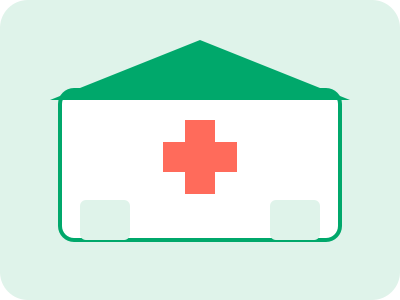

О нас
Семейная аптека, которая растёт вместе с районом.

2018
Открыли первую точку на Лесной.
2021
Запустили онлайн-бронь и доставку.
2024
Появилась карта лояльности.
2026
Обновили сайт и ассортимент.
Частые вопросы
Нужен ли рецепт?
Для рецептурных препаратов да. Остальное отпускаем свободно.
Как быстро привезёте?
В среднем за 60 минут.
Можно вернуть товар?
Лекарства надлежащего качества возврату не подлежат, остальное вернём в течение 14 дней.